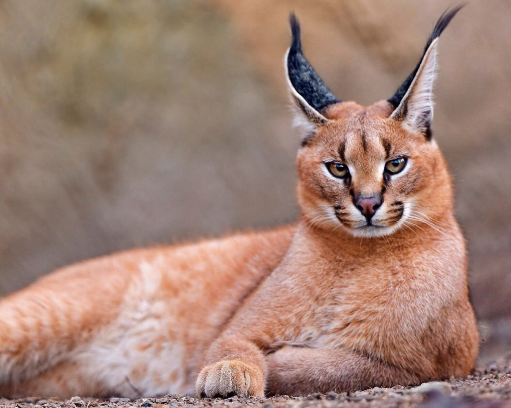
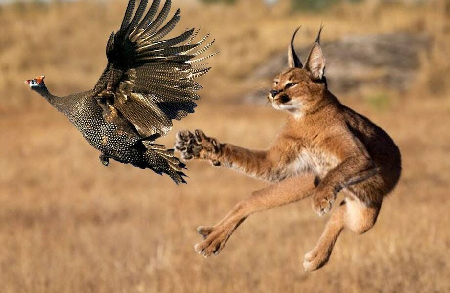
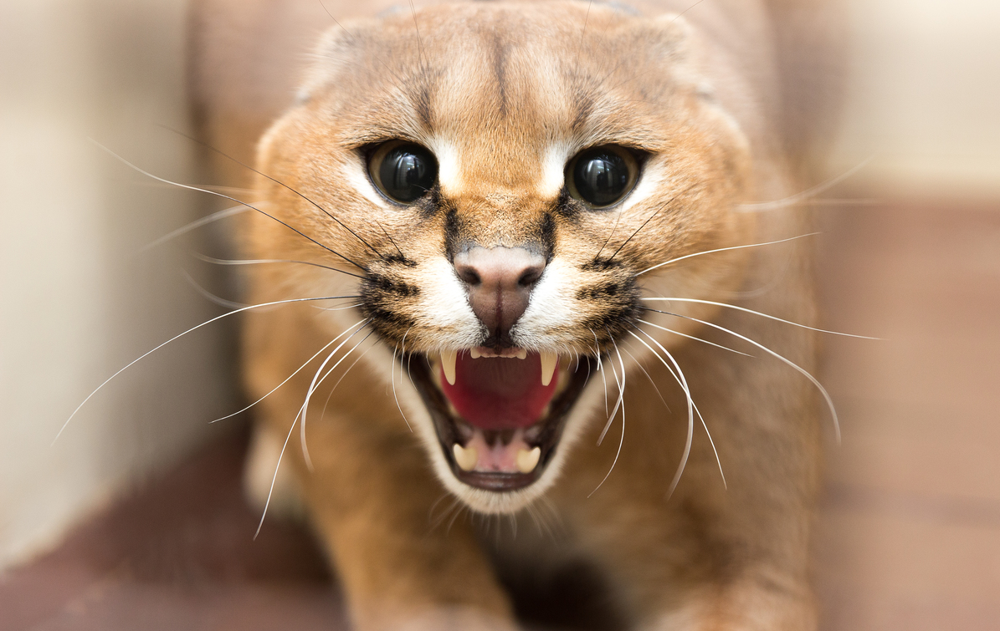

Кошка "Каракал"
Фотографии породы:
  Описание породы:
Карака́л, или степная рысь (лат. Caracal caracal, от тюркского «қара құлақ» — «чёрное ухо»), — хищное млекопитающее семейства кошачьих. Долгое время каракала относили к рысям (Lynx), на которых он похож внешне, однако из-за ряда генетических особенностей его выделили в отдельный род. Несмотря на это, каракал всё же немного ближе стоит к рысям, чем другие кошки, при этом будучи гораздо ближе к пуме по морфологическим признакам. Близок каракал и к африканскому сервалу, с которым хорошо скрещивается в неволе.
Особенности породы:
- Пришла к нам из Африки или Средней Азии
- Короткошорстная кошка
- Вес 16-20 кг
- Рост: до 50 см
- Живут 15-20 лет
- Бонус: Шлёпа!